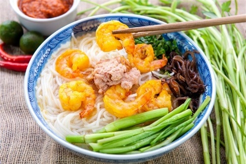

Bún Tôm Hải Phòng
Bún tôm Hải Phòng phải là bún sợi to, mềm và trắng. Tôm được chọn là những con tôm đỏ au, chắc thịt được hấp sơ rồi lột sạch đầu, vỏ, lấy hết đường chỉ đất ở lưng tôm để không bị sạn. Sau khi tẩm ướp gia vị, tôm được xào thơm trong dầu ăn với màu vàng óng bắt mắt. Người bán hàng cũng mách nhỏ việc hấp sơ tôm rồi mới lột vỏ và xào, chiêu này giúp con tôm giữ được dáng cong cong đẹp mắt và độ ngọt.